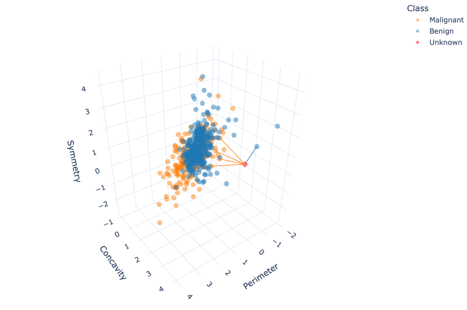

Classification I: training & predicting
Introductions

Tiffany Timbers
Associate Professor of Teaching,
Dept. of Statistics, UBC

Katie Burak
Assistant Professor of Teaching,
Dept. of Statistics, UBC
Helpful resources
Session learning objectives
By the end of the session, learners will be able to do the following:
- Recognize situations where a simple classifier would be appropriate for making predictions.
- Explain the \(K\)-nearest neighbor classification algorithm.
- Interpret the output of a classifier.
- Describe what a training data set is and how it is used in classification.
- Given a dataset with two explanatory variables/predictors, use \(K\)-nearest neighbor classification in Python using the
scikit-learnframework to predict the class of a single new observation.
The classification problem
predicting a categorical class (sometimes called a label) for an observation given its other variables (sometimes called features)
- Diagnose a patient as healthy or sick
- Tag an email as “spam” or “not spam”
- Predict whether a purchase is fraudulent
Training set
Observations with known classes that we use as a basis for prediction
- Assign an observation without a known class (e.g., a new patient)
- To a class (e.g., diseased or healthy)
How?
- By similar it is to other observations for which we do know the class
- (e.g., previous patients with known diseases and symptoms)
K-nearest neighbors
- One of many possible classification methods
- KNN, decision trees, support vector machines (SVMs), logistic regression, neural networks, and more;
Predict observations based on other observations “close” to it
Exploring a data set
Data:
digitized breast cancer image features, created by Dr. William H. Wolberg, W. Nick Street, and Olvi L. Mangasarian
Each row:
- diagnosis (benign or malignant)
- several other measurements (nucleus texture, perimeter, area, and more)
Diagnosis for each image was conducted by physicians.
Formulate a predictive question:
Can we use the tumor image measurements available to us to predict whether a future tumor image (with unknown diagnosis) shows a benign or malignant tumor?
Loading the cancer data
these values have been standardized (centered and scaled)
Describing the variables in the cancer data set
- ID: identification number
- Class: the diagnosis (M = malignant or B = benign)
- Radius: the mean of distances from center to points on the perimeter
- Texture: the standard deviation of gray-scale values
- Perimeter: the length of the surrounding contour
- Area: the area inside the contour
- Smoothness: the local variation in radius lengths
- Compactness: the ratio of squared perimeter and area
- Concavity: severity of concave portions of the contour
- Concave Points: the number of concave portions of the contour
- Symmetry: how similar the nucleus is when mirrored
- Fractal Dimension: a measurement of how “rough” the perimeter is
DataFrame; info
Series; unique
Series; replace
Exploring the cancer data
Visualization; scatter
- Malignant: upper right-hand corner
- Benign: lower left-hand corner
Classification with K-nearest neighbors
Distances
-Compute the distance matrix between each pair from a vector array X and Y using euclidean_distances
K-nearest neighbors; classification
- find the \(K\) “nearest” or “most similar” observations in our training set
- predict new observation based on closest points
KNN Example: new point
KNN example: closest point
if a point is close to another in the scatter plot, then the perimeter and concavity values are similar, and so we may expect that they would have the same diagnosis
KNN Example: another new point

KNN: improve the prediction with k
we can consider several neighboring points, k=3
Distance between points
\[\mathrm{Distance} = \sqrt{(a_x -b_x)^2 + (a_y - b_y)^2}\]
Distance between points: k=5
3 of the 5 nearest neighbors to our new observation are malignant
More than two explanatory variables: distance formula
The distance formula becomes
\[\mathrm{Distance} = \sqrt{(a_{1} -b_{1})^2 + (a_{2} - b_{2})^2 + \dots + (a_{m} - b_{m})^2}.\]
More than two explanatory variables: visualize
Summary of K-nearest neighbors algorithm
The K-nearest neighbors algorithm works as follows:
- Compute the distance between the new observation and each observation in the training set
- Find the \(K\) rows corresponding to the \(K\) smallest distances
- Classify the new observation based on a majority vote of the neighbor classes
K-nearest neighbors with scikit-learn
- K-nearest neighbors algorithm is implemented in
scikit-learn
Now we can get started with sklearn and KNeighborsClassifier()
Review cancer data
scikit-learn: Create Model Object
scikit-learn: Fit the model
Note
- We do not re-assign the variable
- The arguments are
Xandy(note the capitialization). This comes from matrix notation.
scikit-learn: Predict
Data preprocessing: Scaling
For KNN:
- the scale of each variable (i.e., its size and range of values) matters
- distance based algorithm
Compare these 2 scenarios:
- Person A (200 lbs, 6ft tall) vs Person B (202 lbs, 6ft tall)
- Person A (200 lbs, 6ft tall) vs Person B (200 lbs, 8ft tall)
All have a distance of 2
Data preprocessing: Centering
Many other models:
center of each variable (e.g., its mean) matters as well
Does not matter as much in KNN:
Person A (200 lbs, 6ft tall) vs Person B (202 lbs, 6ft tall)
Person A (200 lbs, 6ft tall) vs Person B (200 lbs, 8ft tall)
Difference in weight is in the 10s, difference in height is fractions of a foot.
Data preprocessing: Standardization
- The mean is used to center, the standard deviation is used to scale
- Standardization: transform the data such that the mean is 0, and a standard deviation is 1
scikit-learn: ColumnTransformer
scikit-learnhas apreprocessingmoduleStandardScaler(): scale our data
make_column_transformer: creates aColumnTransformerto select columns
scikit-learn: Select numeric columns
scikit-learn: transform
Scale the data
Compare unscaled vs scaled
Visualize unstandarized vs standarized data
Why scikit-learn pipelines?
- Manually standarizing is error prone
- Does not automatically account for new data
- Prevent data leakage by processing on training data to use on test data (later)
- Need same mean and standarization from training to use on test / new data
Balancing + class imbalance
What if we have class imbalance? i.e., if the response variable has a big difference in frequency counts between classes?
Visualizing class imbalance
Predicting with class imbalance
Upsampling
Rebalance the data by oversampling the rare class
- Separate the classes out into their own data frames by filtering
- Use the
.sample()method on the rare class data frame- Sample with replacement so the classes are the same size
- Use the
.value_counts()method to see that our classes are now balanced
Upsampling: code
Set seed
Upsample the rare class
Upsampling: Re-train KNN k=7
Missing data
Assume we are only looking at “randomly missing” data
Missing data: .dropna()
KNN computes distances across all the features, it needs complete observations
Missing data: SimpleImputer()
We can impute missing data (with the mean) if there’s too many missing values
Imputed data
Put it all together: Preprocessor
Put it all together: Pipeline
Put it all together: Predict
Prediction Area
Model prediction area.
- Points are on original unscaled data
- Area is using the pipeline model
Reference Code
Clicker questions
Alternatively, go to menti.com and use code 8481 0955
Additional resources
- The Classification I: training & predicting chapter of Data Science: A First Introduction (Python Edition) by Tiffany Timbers, Trevor Campbell, Melissa Lee, Joel Ostblom, Lindsey Heagy contains all the content presented here with a detailed narrative.
- The
scikit-learnwebsite is an excellent reference for more details on, and advanced usage of, the functions and packages in this lesson. Aside from that, it also offers many useful tutorials to get you started. - An Introduction to Statistical Learning by Gareth James Daniela Witten Trevor Hastie, and Robert Tibshirani provides a great next stop in the process of learning about classification. Chapter 4 discusses additional basic techniques for classification that we do not cover, such as logistic regression, linear discriminant analysis, and naive Bayes.
References
Lars Buitinck, Gilles Louppe, Mathieu Blondel, Fabian Pedregosa, Andreas Mueller, Olivier Grisel, Vlad Niculae, Peter Prettenhofer, Alexandre Gramfort, Jaques Grobler, Robert Layton, Jake VanderPlas, Arnaud Joly, Brian Holt, and Gaël Varoquaux. API design for machine learning software: experiences from the scikit-learn project. In ECML PKDD Workshop: Languages for Data Mining and Machine Learning, 108–122. 2013.
Thomas Cover and Peter Hart. Nearest neighbor pattern classification. IEEE Transactions on Information Theory, 13(1):21–27, 1967.
Evelyn Fix and Joseph Hodges. Discriminatory analysis. nonparametric discrimination: consistency properties. Technical Report, USAF School of Aviation Medicine, Randolph Field, Texas, 1951.
William Nick Street, William Wolberg, and Olvi Mangasarian. Nuclear feature extraction for breast tumor diagnosis. In International Symposium on Electronic Imaging: Science and Technology. 1993.
Stanford Health Care. What is cancer? 2021. URL: https://stanfordhealthcare.org/medical-conditions/cancer/cancer.html.